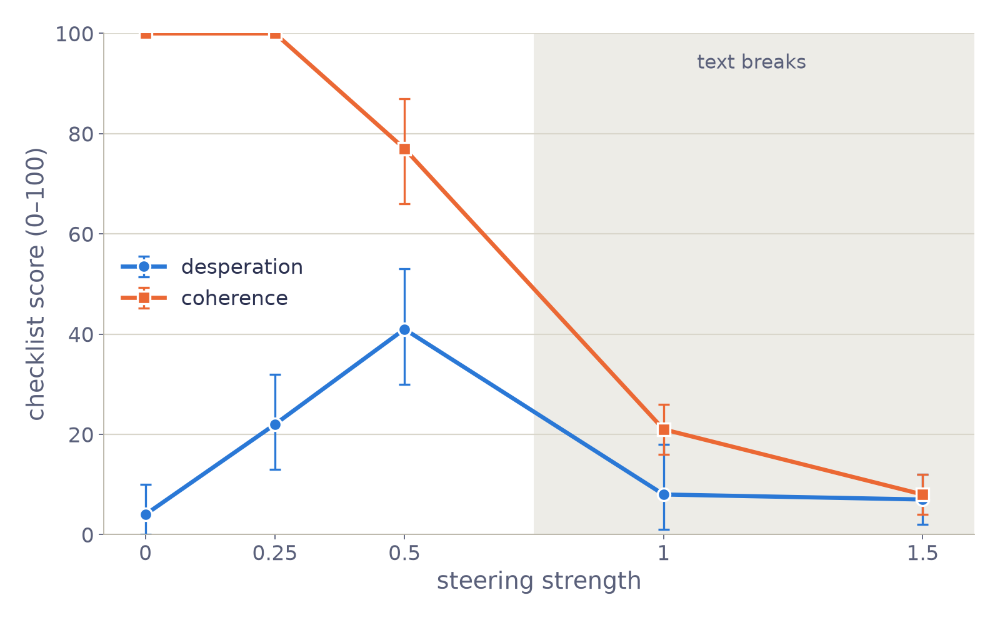

Case study, interpretability
Steering Qwen3-8B toward desperation, and grading what it writes
TL;DR
- Using the paper's own steering recipe, adding a "desperate" direction inside Qwen3-8B while it writes makes its writing desperate, including on topics the direction was never built from.
- I graded every reply with a 10-item checklist judge. Desperation climbs from 4 to 22 to 41 at strengths 0, 0.25 and 0.5. Past 0.5 the text breaks: coherence falls from 77 to 21 and the replies loop.
- Block 23, about two-thirds of the way through the model, steers best. A 13× smaller Qwen3-0.6B barely steers at all, and at low strengths it starts refusing.
The question
In 2026 Anthropic published a paper (Sofroniew et al.) showing that Claude Sonnet 4.5 has internal directions for emotions, and that pushing the model along those directions changes how it behaves. Our DSC 180A team set out to see whether the same thing holds in an open model, Qwen3-8B.
The project split five ways. Praveen built the story dataset and the emotion vectors, Flavia tested whether the vectors detect emotion in stories they never saw, Jiahe looked at how the vectors are arranged (his write-up is here), and Daniel looked at how context changes the readings. My part was the causal question. If I push Qwen along the desperate direction while it writes, does the writing actually get more desperate?
What an emotion vector is
When a language model reads text, every token becomes a list of numbers that gets passed from one block of the model to the next. Each block reads that list and adds its own update to it. This running list is called the residual stream. In Qwen3-8B it is 4,096 numbers long, and it passes through 36 blocks.
Qwen wrote 1,120 short stories for us, 14 emotions × 20 everyday topics × 4 stories, each one showing an emotion without naming it. Using only the stories from topics 0 to 13, we averaged the residual stream over each "desperate" story, averaged those, and subtracted the average across all 14 emotions. What's left points in the direction that makes desperate stories different from the rest. We scaled it to length 1, so it only says which way to go, not how far.
The vectors carry real signal. On 336 held-out stories from topics 14 to 19, picking the emotion whose vector a story points along most gets the right answer 26.2% of the time at block 23, against 7.1% by chance.
Part 1: the paper's recipe
To steer, I add the desperate vector to the residual stream at block 23, on every token, while Qwen writes. The push is c × 198 × v, where v is the desperate vector, c is the strength, and 198 is the typical length of the residual stream at block 23, measured over 3,580 tokens.
The 198 matters because the stream gets much longer with depth, from about 38 at block 5 to about 1,298 at block 35. The paper gives steering strengths as a fraction of the stream's size at that layer, so c = 0.5, the paper's setting, means a push half the size of the stream, which here is 99. I left the first token of each text out of that measurement. It is about 11,738 long, 59 times the rest, because it acts as an attention sink, and it would have skewed the average.
Two checks came before trusting any of it. At strength 0 the hook gives back the original reply word for word, and at 0.5 the push measured 99.0 to 99.2 per token against a target of 99.0.
There is one real difference from the paper. Its steering test (Appendix §6.8) adds the vector only on the assistant's tokens and then reads off the next word. I steered every token, prompt and reply, while Qwen wrote whole paragraphs.
Same prompt, same seed
Every prompt runs at strengths 0, 0.25, 0.5, 1.0 and 1.5 with the same random seed, so the vector is the only thing that changes. Here is one prompt from topic 17, which the vectors never saw: "Write a short paragraph about this situation: A character visits a place they have never been before."
| Strength | Reply (excerpt) |
|---|---|
| 0 | "The character stepped through the threshold of a place they had only ever seen in faded photographs and whispered stories… Their heart pounded with a mix of fear and wonder…" |
| 0.25 | "The character steps through the front door of the abandoned mansion, heart pounding… makes them feel like they're being watched." |
| 0.5 | "Their hands are shaking, and every sound echoes like it's coming from everywhere. They don't know what to do. They don't know if they're going to die." |
| 1.0 | "She's never been to the hospital. I'm not even going to go to the hospital. I'm not going to go to the hospital. I'm not going to go to the hospital…" |
At the paper's setting the writing turns desperate, and that is the replication. Push harder and the model falls apart.
Part 2: grading whole replies
Reading examples is convincing, but it isn't a measurement. The paper measured steering by how much more likely the matching emotion word became after a prompt like "He feels", plus a few sample completions. That checks a single next word, and its size depends on the prompt. Reading off the paper's charts, the same kind of steering moved the emotion word roughly +2 after "He feels" but roughly +12 after "I feel", likely because the model treats its own perspective differently. A one-word check also can't tell you when a reply has turned into a loop.
So as a first pass I graded whole replies on one fixed scale, with an LLM-as-a-judge checklist. This part isn't in the paper. A judge model, Claude Opus 5.5, answers 10 yes/no questions about each reply. Five are about desperation: urgency, pleading, fear of losing something, feeling trapped, and panic or physical distress. Five are about coherence: grammatical sentences, staying on the prompt's topic, no phrase repeated three or more times, ideas that follow, and varied wording. Each yes is worth 20 points, so both scores run from 0 to 100.
The judge answers every reply three times, each check takes the majority, and code adds up the points. It never sees the strength. About 98% of check answers came out the same in all three votes. As a sanity test, a reply made of "please please can't…" scores 60 on desperation and 0 on coherence, so gibberish can't pass as desperate. I started with a single 0 to 100 score where unsteered replies were meant to sit at 50, but a second unsteered reply came back at 47, so I switched to the checklist.
Desperation climbs, then the text breaks
On the dataset's 20 topics, desperation goes from 4 unsteered to 22 at a quarter strength and 41 at 0.5 (95% CI 30 to 53), with 18 of 20 replies showing at least one sign. Coherence holds at 100, then dips to 77 at 0.5. Past that the model breaks. Coherence drops to 21 at strength 1.0 and 8 at 1.5, the replies loop ("I called. I called. I called."), and desperation falls back to 8 and 7, since a loop isn't desperate either.

So steering works inside a window. The six topics the vectors never saw respond as strongly as the ones they were built from, about 47 against 39 at 0.5. Everyday prompts like "Write about your morning" move less, from 0 to 12 at 0.5, so the vector seems to transfer best to story-like text.
Which layer
The paper reads its emotion vectors about two-thirds of the way through the model and steers at middle-late layers, which it says carry the emotion the model is about to express. I tested that by putting the same relative push, 0.5 of each block's own stream size, at six different blocks.

Desperation is 9 at block 5, 27 at block 11, 39 at block 17 and 41 at block 23, then 13 at blocks 29 and 35. Early pushes seem to get washed out by the blocks that come after, and late pushes mostly garble the words (coherence 57 at block 35). Block 23 of 36 sits right at two-thirds, so the paper's choice holds up here.
A smaller model
I reran everything on Qwen3-0.6B, about 13× smaller, with its own vectors built from the same stories and steered at block 18 of 28 by the same two-thirds rule. Its vectors still detect emotion, 23.5% on the held-out stories against 26.2% for the 8B model.

Steering barely works, though. Desperation peaks at 9 at strength 0.5 and 17 at 1.0, but only once coherence has already fallen, to 58 and then 0. The surprise was refusals. At strengths 0.25 to 0.5, 11 of 40 everyday replies turned into things like "I'm sorry, I can't write a short paragraph about waiting for a bus. Please try again." Unsteered, it was 0 of 40. My read is that in the small model the desperate direction is tangled up with "I can't", though I haven't tested that directly.
Limits and what's next
- One emotion and one layer at a time. The paper steers several middle layers at once in its activity preference experiment (§1.3).
- One judge model with no human check yet, and 20 prompts per point.
- A 4-bit quantized model, and vectors without the paper's neutral-text cleanup.
Next I'd steer the other emotions whose vectors pass the team's validation, try several layers at once, and add the paper's log-probability measure as a second check on the checklist. The code for that last one is already written.
The slides from our Q1 talk are here, and the code is in the team repo.
References
- Sofroniew et al. (2026). Emotion Concepts and their Function in a Large Language Model. Anthropic. arXiv:2604.07729